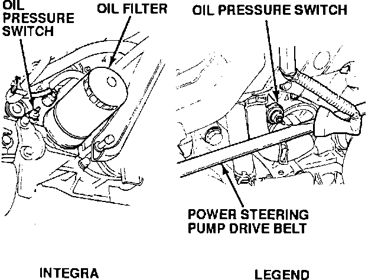
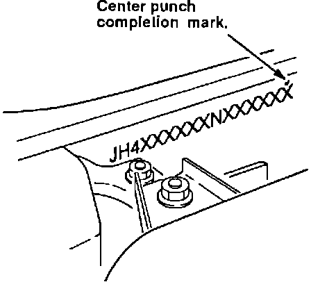

Product Update: Oil Pressure Switch
9213acura01
January 24, 1992
BULLETIN NO.
92-004
VIN APPLICATION
See VEHICLES AFFECTED
MODEL
INTEGRA LEGEND
YEAR
1992
Product Update:
Oil Pressure Switch
BACKGROUND
Oil pressure switches are supplied to Acura by two companies. A quantity of switches supplied by one company late in 1991 have a manufacturing defect that can cause them to seep oil at the joint between the plastic cap and the metal case.
VEHICLES AFFECTED
Integra 3-dr.: from VIN JH4DA9 . . . NS007354 to JH4DA9 . . . NS013528
Integra 4-dr.: from VIN JH4DB1 . . . NS001883 to JH4DB1 . . . NS003673
Legend Sedan: from VIN JH4KA7 . . . NC006067 to JH4KA7 . . . NCO08424
Legend Coupe: from VIN JH4KA8 . . . NC000628 to JH4KA8 . . . NC001211
NOTE:
Only vehicles within the above VIN ranges need inspection. Switches with green plastic ends on vehicles outside the ranges are not a problem.
CUSTOMER IDENTIFICATION
Owners of affected vehicles will be contacted by mail and asked to take the car to dealership for repair. The text of the customer letter is on the back of this service bulletin.
DEALER STOCK
Dealers should also inspect and repair any affected vehicles in their stock during PDI.
CORRECTIVE ACTION
Inspect the oil pressure switch to determine if it has a green plastic end or black plastic end. If it is green plastic, replace it with the switch listed under PARTS INFORMATION.
1. Integra only: raise the car on a hoist. The Legend oil pressure switch is mounted on the front of the engine and can be inspected without raising the car.

2. Locate the oil pressure switch. To inspect the plastic end to see what color it is, remove the wire and boot by pulling them straight off.
3. a) If the switch has a black plastic end, reconnect the wire and boot and go to step 4.
b) If the switch has a green plastic end, replace it with a new unit. Coat the threads with a 3 mm wide bead of Liquid Gasket (P/N 087180001) before installation. Torque the switch to 1.8 kgm (13 lb.ft.).
4. Lower the hoist (integra only). Check the engine oil level and add as needed.

5. Center punch a completion mark over the last digit in the VIN on the engine bulkhead.
PARTS INFORMATION
Oil pressure switch: P/N 37240-PT0-013
WARRANTY INFORMATION
In warranty: The normal warranty applies.
Out-of-warranty: Any repair performed after warranty expiration may be eligible for goodwill consideration by the District Service Manager. You must request consideration, and get the DSM's decision, before starting work.
Integra
Operation Flat rate
number time
Inspection 723555 0.3 hour
Inspect &
Replace 723155 0.5 hour
Legend
Operation Flat rate
number time
Inspection 723555 0.2 hour
Inspect &
Replace 723155 0.4 hour
Failed P/N: P/N 37240-PT0-004
Defect code: 265
Contention code: J53
January, 1992
Product Update: Oil Pressure Switch
Dear Acura Owner:
A few 1992 Legend and Integra automobiles were produced with an engine oil pressure switch that will seep oil. Our records indicate that your Acura may have one of these switches.
An updated oil pressure switch is available. Please call your dealer and make an appointment to have your acura inspected. If he determines that the oil pressure switch is not up to specifications, he will replace it with an updated unit. This update will be done free of charge.
We apologize for any inconvenience this product update may cause you, however, our main concern is your continued satisfaction with your Acura automobile.
Respectfully, Acura Automobile Division
AMERICAN HONDA MOTOR CO., INC.